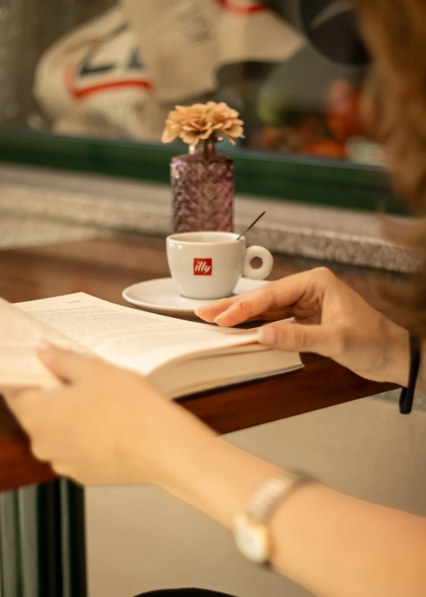
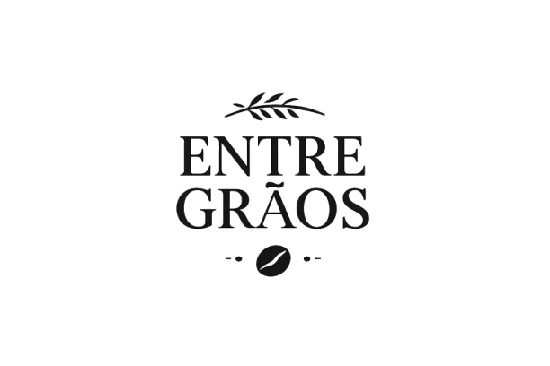
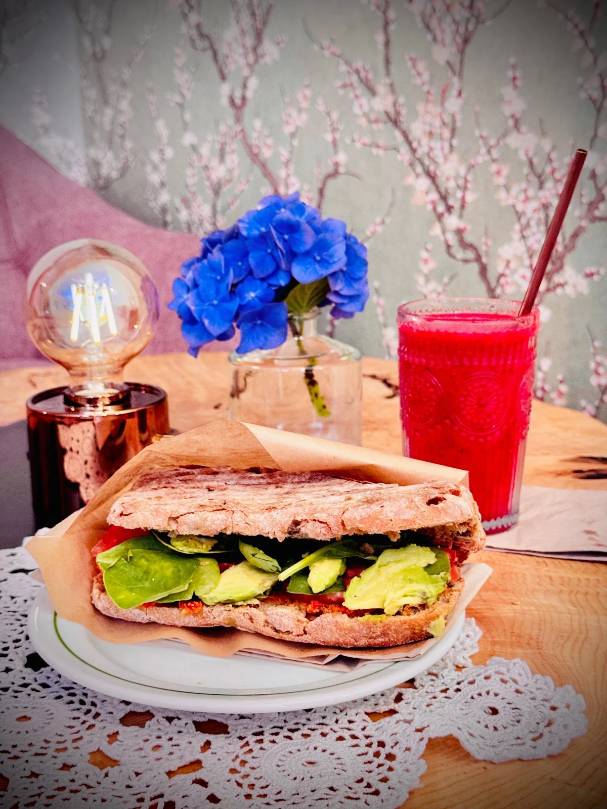
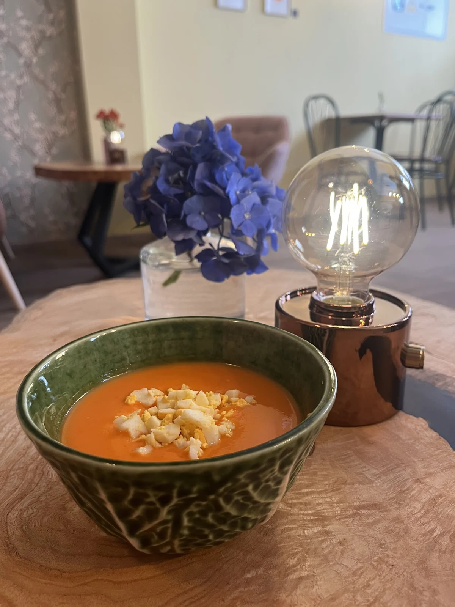
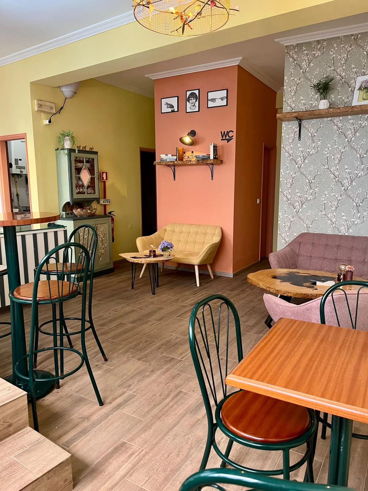
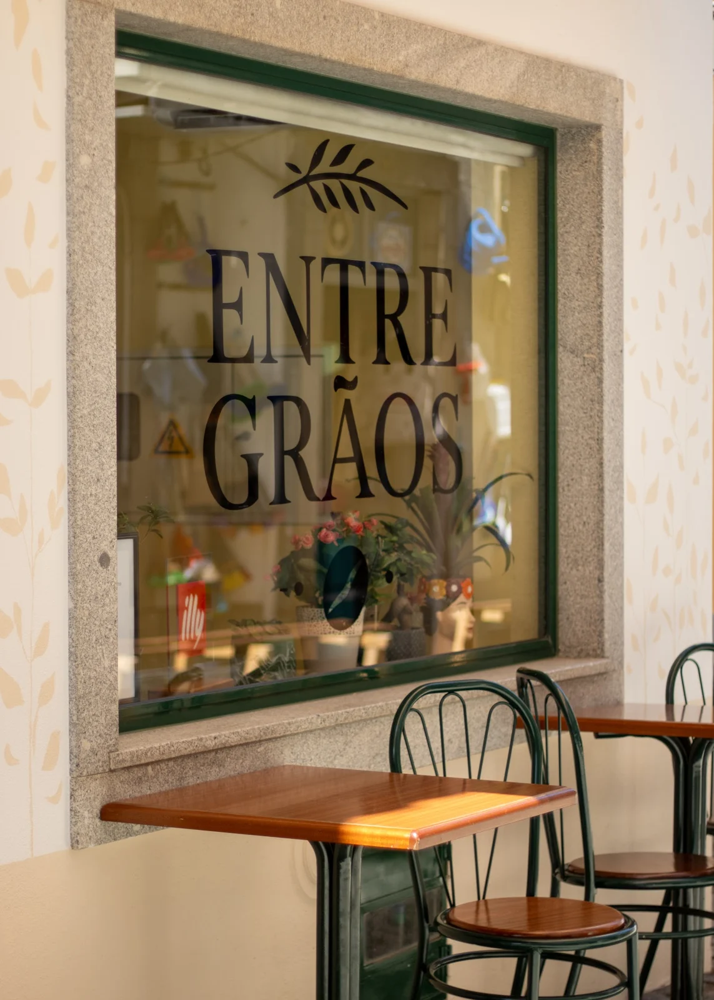
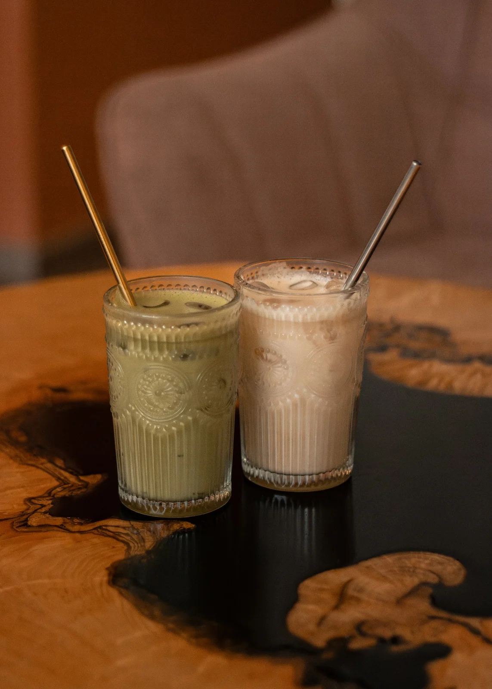
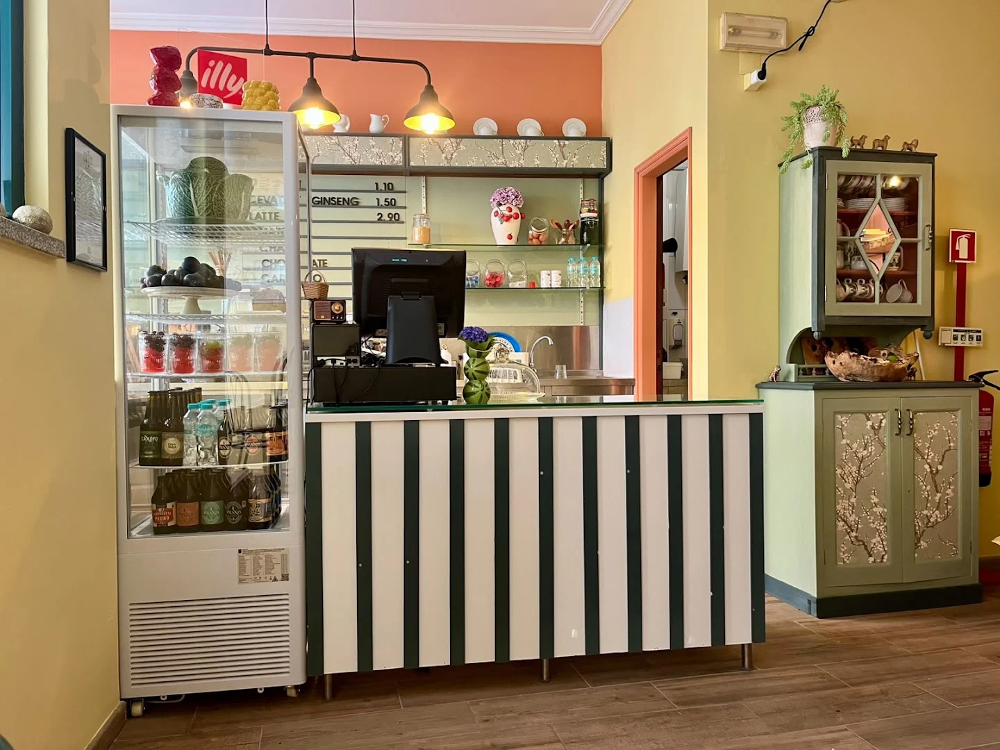

Coffee and homemade baking
Coffee and homemade cakes
Alongside Illy coffee, we serve lattes, matcha and chai. Pair your drink with homemade cakes or cinnamon rolls.


Entre Grãos · Rua da Cale, Fundão
Illy coffee, homemade cakes and cinnamon rolls. For lunch, sandwiches with a vegan option, seasonal choices and soup on the side.
Lunch from Monday to Friday12:00 to 15:00

At the table

Choose a sandwich or one of our seasonal lunch options.
Sandwiches of the dayVaried fillings, including a vegan option.
Soup on the sideTo enjoy with your sandwich.
Alongside Illy coffee, we serve lattes, matcha and chai. Pair your drink with homemade cakes or cinnamon rolls.

Choose the full brunch with drinks included, or order items separately.

Our space
Enjoy a coffee, a slice of cake or lunch in central Fundão.
Photos from our café
@entre.graos.fnd


